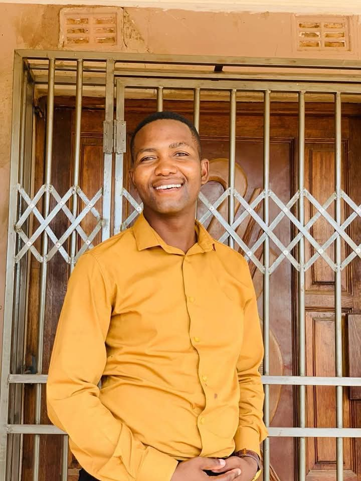

Who We Are
Sediba Sa Bophelo Prayer Tower is a registered organization with the Department of Social Development (Reg No: 233-628 NPO).
Tax No: 9100231274 | CSD No: MAAA1268467

Founded on the pillars of prayer, healing, and community support, our journey began with a vision to create a spiritual home where everyone is welcome, and where faith is lived out through action, compassion, and unity. We are committed to empowering individuals and families, nurturing spiritual growth, and serving our community with love and integrity.
Our History
Sediba Sa Bophelo Prayer Tower was established in response to the spiritual and social needs of our community in Limpopo. Over the years, we have grown from a small gathering of believers into a vibrant ministry impacting lives through worship, outreach, and development programs. Our story is one of faith, resilience, and a deep commitment to making a difference.

Leadership Team

Apostle TG MASOLA
Senior Pastor & Founder

Mrs. MASOLA
Children & Women’s Ministry

MS Mogashoa
Community Outreach
Our Values
- Faith: Trusting God in all things and living out the Gospel daily.
- Compassion: Serving others with love, kindness, and humility.
- Integrity: Upholding honesty, transparency, and strong moral principles.
- Unity: Building a diverse, inclusive, and supportive community.
- Empowerment: Equipping people to fulfill their God-given potential.
Vision
Preaching the Gospel of change through the word of God and transforming the community with development.
Mission
Gathering the people of one mind, in one place, with one heart of building the nation through social cohesion and economic development.
Objectives
- To spread the good news of the gospel.
- To help the needy and impoverished.
- To run Gender-Based Violence Awareness Programs.
- To provide counseling sessions for victims of abuse and past trauma.
- To promote social, spiritual, and aesthetic growth in adolescents.
- To provide a supportive atmosphere for people who require temporary care, assistance, and involvement.
- To provide exceptional care and early education to young children in a safe setting.
- To raise awareness, offer assistance, and build a safer neighborhood for all.
- To improve learning results and offer additional academic support to students.
- To alleviate poverty by creating jobs and developing skills.
- To promote integrity, leadership, and moral values in our community.